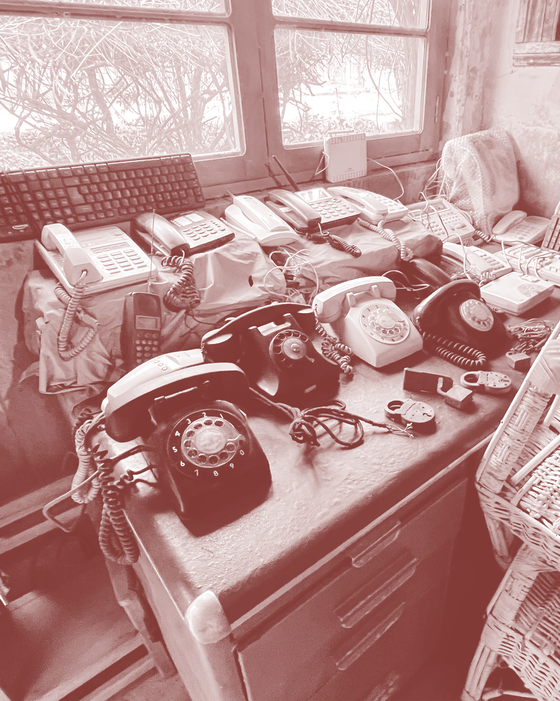

Contacto
Dirección
Unnamed Road, Longaví, Maule.
Horario de atención
Lunes a domingo: 15:00 – 19:00 hrs
(Cerrado días festivos y Viernes Santo)
Teléfono
Correo
INGRESO GRATUITO

Unnamed Road, Longaví, Maule.
Lunes a domingo: 15:00 – 19:00 hrs
(Cerrado días festivos y Viernes Santo)
INGRESO GRATUITO
